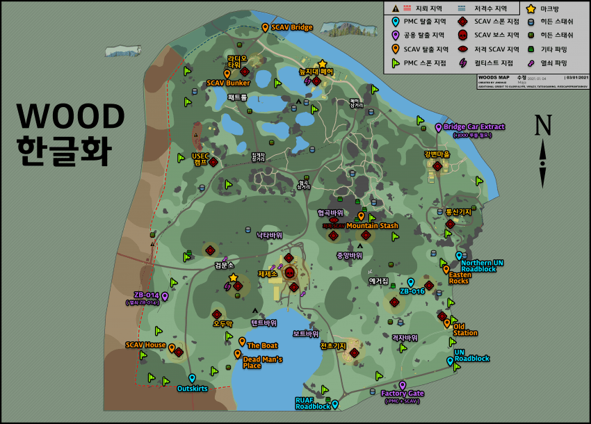

우드
우드 맵

Lend lease - Part 1(무기대여 파트 1)
- 첫번째 Motor Controller 찾기
- 첫번째 Motor Controller 건네주기
- 두번째 Motor Controller 찾기
- 두번째 Motor Controller 건네주기
- 세번째 Motor Controller 찾기
- 세번째 Motor Controller 건네주기
- 첫번째 Single-axis Fiber Optic Gyroscope 찾기
- 첫번째 Single-axis Fiber Optic Gyroscope 건네주기
- 두번째 Single-axis Fiber Optic Gyroscope 찾기
- 두번째 Single-axis Fiber Optic Gyroscope 건네주기
퀘스트 보상
- 20,000 경험치
- Skier(스키어) 평판 +0.12
- 3,500 달러 ($)
이 퀘스트는 총 5개의 퀘템을 요구하는데 Woods에 2개, Shoreline에 3개가 있다. Woods에 위치한 퀘템들은 각각 제재소 남동쪽에 위치한 무기상자 두 개가 있는 공장 옆의 픽업트럭에 실린 상자 안에. 나머지 하나는 제재소 동쪽의 체크포인트에 있는 검은색 SUV의 앞좌석에 있다.
Shoreline에 위치한 퀘템은 남동쪽에 위치한 추락한 드론에서 바위 옆에 서서 드론을 바라보는 방향으로 서면 오른편 너머에 부셔진 상자가 보이는데 그 안에 퀘스트 템이 위치해있다. 나머지 2개는 각각 서관 216호의 철제 캐비넷 안, 동관 306호와 308호 사이의 발코니에 있는 종이상자 안에 위치해있다. 두 퀘템 모두 다 키가 있어야 들어 갈 수 있는 방 안에 위치해 있지만 동관의 경우 306호나 308호의 키 중 하나만 있으면 된다.